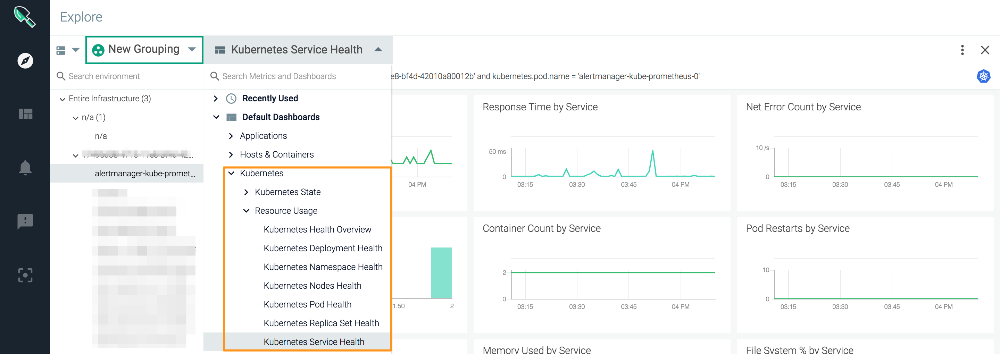

GKE Agent Installation Steps
Google Kubernetes Engine (GKE) is a managed environment for running Kubernetes in Google Cloud, in order to deploy containerized applications. As of Sysdig agent version 0.88, Sysdig supports all flavors of GKE, including Ubuntu and GKE's default Container-Optimized OS (COS).
Note that the standard Sysdig agent cannot be installed on GKE COS because Sysdig relies on a kernel module that COS does not allow. To accommodate this limitation Sysdig has developed an alternate probe built on eBPF, a "universal in-kernel virtual machine."
The instructions below describe a standard GKE agent install and call out the special steps needed to install the eBPF probe if you are using COS.
 |
Because GKE uses stateful firewalls, you must actively open port 6443 for the Sysdig agent, for both inbound and outbound traffic.
Note
In earlier versions, the Sysdig Agent connected to port 6666. This behavior has been deprecated, as the Sysdig agent now connects to port 6443.
 |
Linux kernel version >= 4.14.
When performing the installation steps, you will add one additional parameter to install the eBPF probe. See Step 7, below.
You can review Agent Install: Kubernetes | GKE | OpenShift | IBM and the Host Requirements for Agent Installation for additional context, if desired.
To deploy agents using Kubernetes daemonsets, you will download the following configuration files, edit them as required, and deploy them.
sysdig-agent-clusterrole.yaml sysdig-agent-daemonset-v2.yaml
Note
HELM CHART OPTIONKubernetes also offers a package manager, Helm, which uses charts to simplify this process.
If you are using Helm charts in your K8s environment, we recommend using them to deploy Sysdig agents, as described here.
Download the sample files
sysdig-agent-clusterrole.yaml,sysdig-agent-daemonset-v2.yaml,andsysdig-agent-configmap.yaml.Create a namespace to use for the Sysdig agent.
Note
You can use whatever name you want. In this document, we used
sysdig-agentfor both the namespace and the service account.kubectl create ns sysdig-agent
Create a secret key using the command:
kubectl create secret generic sysdig-agent --from-literal=access-key=<your sysdig access key> -n sysdig-agent
If you are running Kubernetes 1.6 or higher, you must
Grant your user the ability to create roles in Kubernetes by running the following command (see Google documentation for more):
kubectl create clusterrolebinding your-user-cluster-admin-binding --clusterrole=cluster-admin --user=your.google.cloud.email@example.org
Create a service account for the Sysdig agent using the
clusterrole.yamlfile.The Sysdig agent must be granted read-only access to certain Kubernetes APIs, which the agent uses to populate metadata and provide component metrics.
Sysdig provides a config file in GitHub. Deploying this file creates a cluster role and service account in Kubernetes, and defines cluster role binding that grants the Sysdig agent rules in the cluster role.
Run the following commands (using whatever namespace you defined in Step 2):
kubectl apply -f sysdig-agent-clusterrole.yaml -n sysdig-agent kubectl create serviceaccount sysdig-agent -n sysdig-agent kubectl create clusterrolebinding sysdig-agent --clusterrole=sysdig-agent --serviceaccount=sysdig-agent:sysdig-agent
FOR ON-PREM INSTALLATIONS ONLY: Edit
configmap.yamlto add thecollectoraddressandport, andSSL/TLSinformation :collector: collector_port: ssl: #true or false ssl_verify_certificate: #true or falseNote
ssl_verify_certificateshould be set to false if a self-signed certificate or private, CA-signed cert is used. See information about SSL in on-premises here.(ALL INSTALLS): Apply the
configmap.yamlfile using the command:kubectl apply -f sysdig-agent-configmap.yaml -n sysdig-agent
FOR GKE COS ONLY: To enable the eBPF probe required for COS: Uncomment the following parameters in
sysdig-agent-daemonset-v2.yamlunder the env section:env: - name: SYSDIG_BPF_PROBE value: ""(ALL INSTALLS): Apply the
daemonset-v2.yamlfile using the command:kubectl apply -f sysdig-agent-daemonset-v2.yaml -n sysdig-agent
The agents will be deployed and you can check the Monitor UI to see some metrics. You can make further edits to the configmap as described below.
These steps are optional but recommended.
Edit
sysdig-agent-configmap.yamlto uncomment the line:new_k8s: trueThis allows kube state metrics to be automatically detected, monitored, and displayed in Sysdig Monitor.
For more information, see the Kube State Metrics entry in the Sysdig blog.
Edit
sysdig-agent-configmap.yamlto uncomment the line:k8s_cluster_name:and add your cluster name.Setting cluster name here allows you to view, scope, and segment metrics in the Sysdig Monitor UI by Kubernetes cluster.
Note: Alternatively, if you assign a tag with "
cluster" in the tag name, Sysdig Monitor will display that as the Kubernetes cluster name.Apply the configmap changes using the command:
kubectl apply -f sysdig-agent-configmap.yaml -n sysdig-agent
Proceed to verify the metrics in the Sysdig Monitor UI.
Note
There are two ways to update the agent configuration:
Option 1: Edit the files locally and apply the changes with kubectl apply -f:
kubectl apply -f sysdig-agent-configmap.yaml -n sysdig-agent
Option 2: Use kubectl edit to edit files on the fly:
kubectl edit configmap sysdig-agent -n sysdig-agent
Running agents will automatically pick the new configuration after Kubernetes pushes the changes across all the nodes in the cluster.
Log in to Sysdig Monitor to verify that the agent deployed and the metrics are detected and collected appropriately.
The steps below give one way to do the check.
(See also Sysdig Monitor Documentation.)
Access Sysdig Monitor:
SaaS: https://app.sysdigcloud.com
Log in with your Sysdig user name and password.
Select the
Exploretab to see if metrics are displayed.(Once you have enabled
new_k8s:true)To verify that kube state metrics and cluster name are working correctly: Select the
Exploretab and create a grouping bykubernetes.cluster.nameandkubernetes.pod.name.
Select an individual container or pod to see details.

Note
Kubernetes metadata (pods, deployments etc.) appear a minute or two later than the nodes/containers themselves; if pod names do not appear immediately, wait and retry the Explore view.
If agents are disconnecting, there could be an issue with your MAC addresses. See Troubleshooting Agent Installation for tips.
Sysdig provides a list of static IP addresses that can be whitelisted in a Sysdig environment, allowing users to establish a network connection to the Sysdig backend without opening complete network connectivity. This is done by setting the Collector IP to collector-static.sysdigcloud.com .
Note
The sysdig-agent-configmap.yaml file can be edited either locally or using the edit command in Kubernetes. refer to the section above for more information.
To configure the collector IP in a Kubernetes SaaS instance:
Open
sysdig-agent-configmap.yamlin a text editor.Uncomment the following lines:
collector:
collector_port
Set the collector: value to collector-static.sysdigcloud.com
Set the collector_port: value to 6443
Save the file.
The example file below shows how the sysdig-agent-configmap.yaml file should look after configuration:
apiVersion: v1
kind: ConfigMap
metadata:
name: sysdig-agent
data:
dragent.yaml: |
### Agent tags
# tags: linux:ubuntu,dept:dev,local:nyc
#### Sysdig Software related config ####
# Sysdig collector address
collector: collector-static.sysdigcloud.com
# Collector TCP port
collector_port: 6443
# Whether collector accepts ssl/TLS
ssl: true
# collector certificate validation
ssl_verify_certificate: true
# Sysdig Secure
security:
enabled: true
#######################################
# new_k8s: true
# k8s_cluster_name: productionConnect to the Sysdig Backend via Static IPs (SaaS only)